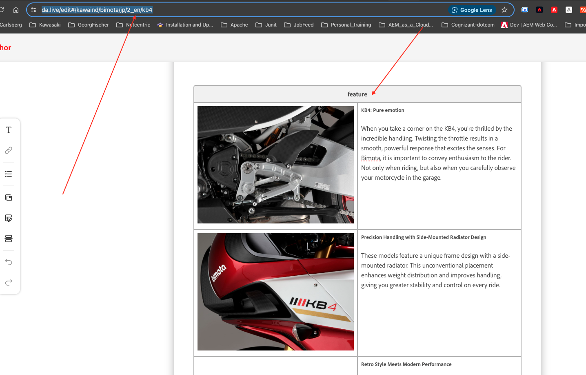
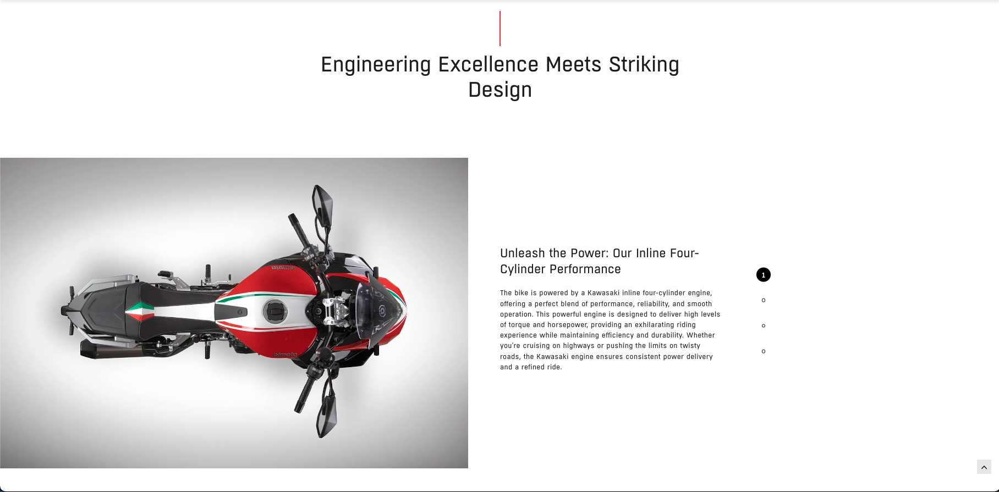

/content/bimota-training/blocks/feature
Layout & content
Verified guide
5 min read
Feature
Vertical feature slider for Product Pages, with auto-highlighted active slide.
This block can be used on Product Pages where you want to highlight the special features of the product. It's a vertical slider block.
Required sections
The block has the following sections:
- Title Component (mandatory)
- Images for each feature
- Features Headline (mandatory) — rendered with H5 styling
- Description of each feature
- Active slide number — automatically highlighted as the visitor scrolls/clicks through
Adding the block to a page
Two ways to add it:
- Copy from an existing page — open an existing page under your respective country folder that already has a Feature block (e.g. a model page), copy the block, and paste it into your document.
- Use the Library — in da.live, click Library in the block toolbar, then choose Feature from the list of available blocks.
Always use a 'section break' after each block to separate it from the previous block.
The block skeleton
Below is the empty skeleton you fill in — a Title (line) table, followed by the Feature table with one row per feature (image cell + title/description cell):
Title (line) <> Feature < > | < > <<description>> <<add image here>> | <<title>> <<description>> <<add image here>> | <<title>> <<description>> <<add image here>> | <<title>> <<description>></pre></div><p>You're not limited to four rows — add as many feature rows as you need, following the same two-cell pattern.</p> <h2 class="h5 mt-4">What you fill in</h2> <table class="table table-sm table-bordered"> <tbody><tr><td class="fw-semibold" style="width:32%;">Title (line) row</td><td>The section heading, required, rendered with an animated vertical line beside it.</td></tr><tr><td class="fw-semibold" style="width:32%;">Feature image</td><td>One image per feature row — required for each feature.</td></tr><tr><td class="fw-semibold" style="width:32%;">Feature headline</td><td>The bolded title for that feature, required, rendered with H5 styling.</td></tr><tr><td class="fw-semibold" style="width:32%;">Feature description</td><td>Supporting paragraph text under the headline.</td></tr><tr><td class="fw-semibold" style="width:32%;">Active slide indicator</td><td>Automatically highlights which feature/slide is currently active — nothing to configure.</td></tr></tbody> </table> <p></p> <p class="module-shot-caption">Copying the Feature block from an existing page under a country folder in da.live.</p> <p></p> <p class="module-shot-caption">The Feature block rendered on the page — image on the left, headline + description on the right, with the active-slide indicator.</p> <h2 class="h5 mt-4">Copy/paste snippet</h2> <div class="code-wrap"> <pre class="code-block">| Title (line) | | |---|---| | <<Enter Title here>> | | | Feature | | |---|---| | <<add image here>> | <<title>><br><<description>> | | <<add image here>> | <<title>><br><<description>> | | <<add image here>> | <<title>><br><<description>> | | <<add image here>> | <<title>><br><<description>> |</pre> </div> <p class="mt-3"><a href="https://github.com/kawaind/bimota/tree/main/blocks/feature" target="_blank" rel="noopener">View source on GitHub →</a></p> <div class="alert alert-success mt-4" role="alert"> <strong>Verified module.</strong> Written from Feature Block guide (internal PDF). </div> <div class="mark-complete-row"> <button type="button" class="btn btn-outline-primary" id="mark-complete-btn" data-slug="feature">Mark this module as reviewed</button> </div> <div class="module-nav-footer"> <div><a href="news-stories.html">← 07 News / Stories</a></div> <div><a href="highlight.html">09 Highlight →</a></div> </div> </main> </div> <footer class="site-footer" id="site-footer"></footer> <script src="https://cdnjs.cloudflare.com/ajax/libs/bootstrap/5.3.3/js/bootstrap.bundle.min.js"></script> <script src="../assets/js/modules-data.js"></script> <script src="../assets/js/app.js" defer></script> <script src="../assets/js/nav-tree.js" defer></script> </body> </html>